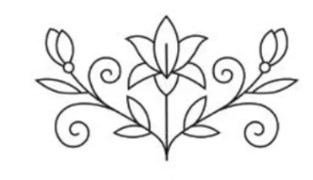
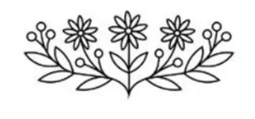
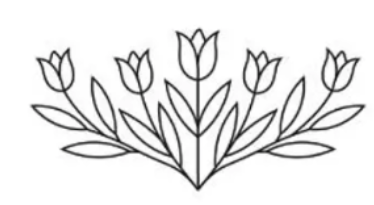

Areej Handmade
← Back to shopChapter 01 · The beginningEvery story
Every story
starts somewhere.
A blank embroidery hoop. A thought worth keeping. Scroll slowly and watch a personal keepsake take shape.



Areej
THE FINAL STITCHMade to mean
Make your own hoop →
Made to mean
more.
Make your own hoop →Every piece starts with a story.
For now, these are place-holder images. Soon, this space will hold the real people, gifts and handmade details behind Areej Handmade.


Scroll to create